While cross-country skiing, PINGU and his friend rudely barge in front of an elderly skier. However as he is mucking around PINGU’s ski breaks. Luckily for him despite his behaviour, the old man is understanding and helps PINGU home again.
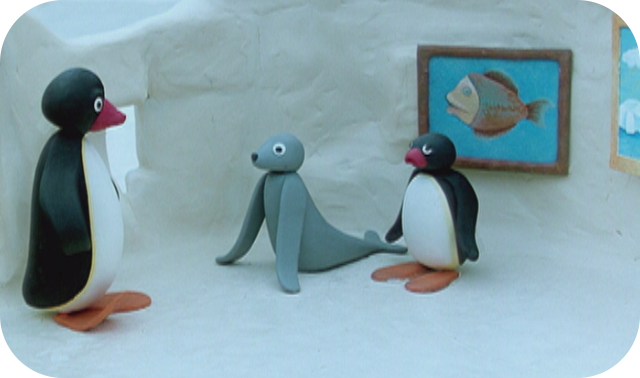
Episode 2
Pingu's Museum Visit
PINGU and his friend Robby get up to all sorts of mischief during a visit to the Art Museum to the annoyance of the museum curator who seeks to reprimand the two rascals. However every time he tries to rectify the damage he manages to make it worse.
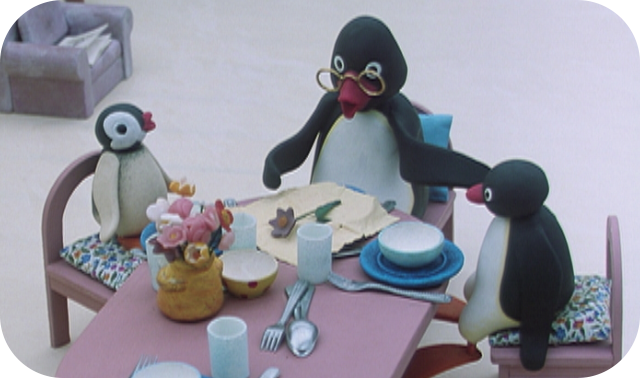
Episode 3
Pingu's Grandfather Comes To Visit
PINGU and Pinga only want to eat fish and cake for supper. Grandfather understands this and eats up everything that the youngsters do not want. When Father discovers what is going on he thinks that Grandfather is spoiling his grandchildren.
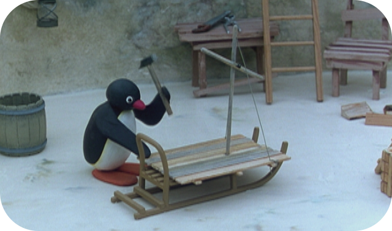
Episode 4
Pingu's Big Trip
PINGU plans to set off on a great expedition. But when Pinga discovers PINGU’s preparations she hides on the sledge. Having gone a little way PINGU realises that she is there and is forced to turn back. Blissfully unaware of the failed plan, mother sits down to eat supper with her children as usual.
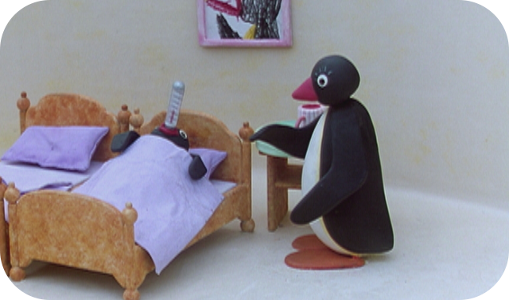
Episode 5
Pingu Pretends To Be Ill
PINGU decides that he does not want to go to school this morning and he pretends he is ill. However, when his mother fetches the doctor, he sees right through the youngsters ploy and suggests a disgusting cure that PINGU does not like the sound of one little bit. Sure enough PINGU is sitting at his desk in time for his first lesson.
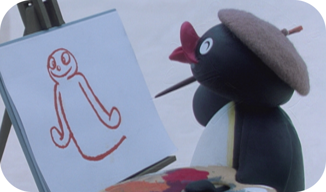
Episode 6
Pingu The Painter
PINGU discovers some painting materials and inspired by the idea of being a painter he sets about searching for a suitable subject. Robby soon becomes the model for his painting but quickly gets bored and starts to play around. Unbeknownst to them the ‘mess’ they leave behind them on the ice is a work of art in itself.
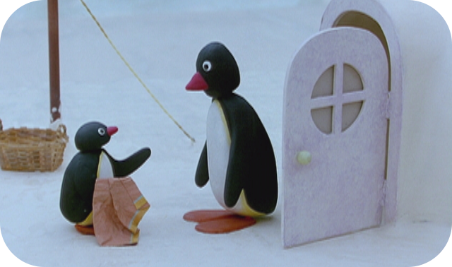
Episode 7
Pingu's Prank
After PINGU has helped his neighbour he is rewarded for his kindness. When his friend repeats the task expectant of the same reward the neighbour sees through the ruse. In revenge the two young penguins decide that they will play a trick on the neighbour but it all ends with an innocent passer-by becoming the victim of their prank.
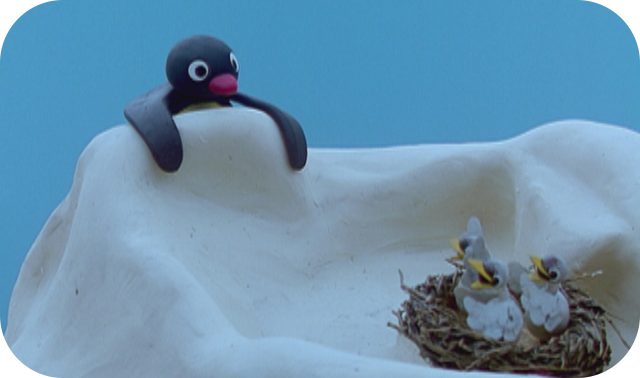
Episode 8
Pingu And The Bird's Mother
A seagull steals PINGU’s fish. His search for the thief leads him to a bird’s nest full of young birds. When PINGU sees the chicks he understands the mother bird’s actions. What is more he decides to help by stealing fish from around the village to feed the birds. The owners of the fish he steals however are less than impressed by the disappearance of their food.
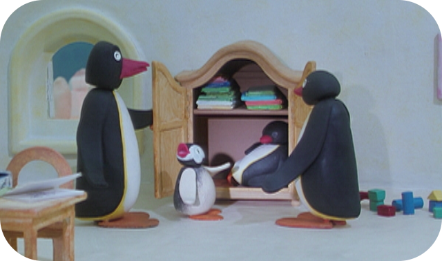
Episode 9
Pingu Argues With His Mother
While PINGU is splitting wood for his mother to use on fire, his friend invites him to play. PINGU asks Mother if he can go but the answer is no. However PINGU leaves the task despite his mother’s words and has to be fetched back from the game. This only leads to an argument and PINGU decides to hide as a result, but a hint from Pinga leads his relieved parents to find him in the end.
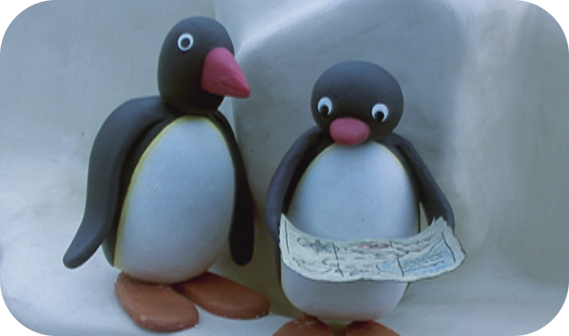
Episode 10
Pingu And The Message In A Bottle
Instead of a fish PINGU and his friends catch a bottle, containing a mysterious map. However, the message leads them to an old chest with a seal-shell inside. After an initial disagreement his friend takes the chest and PINGU is left with the unremarkable shell. However when he gets home they discover that the shell holds treasure of its own.
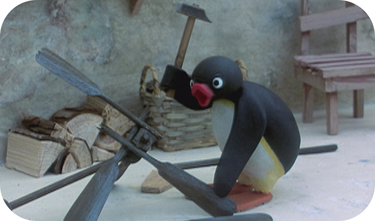
Episode 11
Pingu Has An Idea
As their Mother is asleep PINGU and Pinga take the record player outside and try to find a way to make it work mains electricity. But, in the end it is only when he sees his father check the car battery that PINGU comes up with solution. When Mother awakes she is thrilled to hear the music outside but only PINGU and Pinga know what is making it possible.
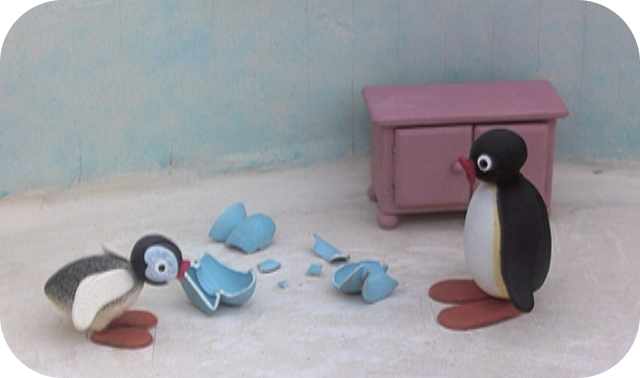
Episode 12
Pingu And The Broken Vase
PINGU and Pinga are playing when they accidentally break their mother’s beautiful vase. To PINGU’s embarrassment Pinga tells her father how it happened. However, father understands it was an accident and finds a replacement and mother is pleased to receive a bunch of flowers as well. All the same PINGU still annoyed when Pinga also tells her Mother when he was hoping that she would never have to know.
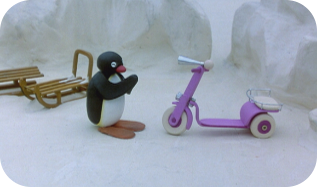
Episode 13
Pingu And The Paper Aeroplane
On the way to school PINGU has bed luck with Pingi his girlfriend from school. During one of his lessons a classmate throws a paper aeroplane, it hits the teacher and PINGU gets the blame and is punished. PINGU decides to get revenge on the classmate who threw the plane but in the end it is this classmate who helps him out.
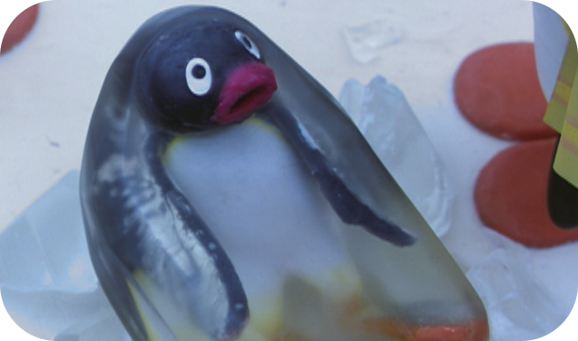
Episode 14
Pingu Seeks Revenge
PINGU’s friend Pingo teases him while he is enjoying himself with his girlfriend Pingi. This annoys PINGU and he plans revenge. He saws away at the bridge to Pingo’s house and then tries to persuade him to cross is so that he will fall into the water. But when Grandfather wants to cross the bridge at the PINGU tries to prevent him and fall in the process.
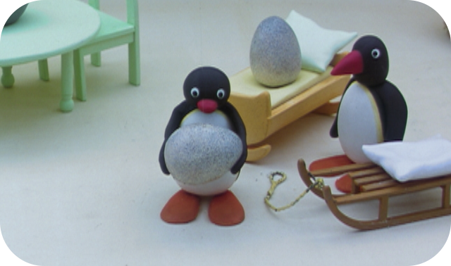
Episode 15
Pingu And The Mix up
PINGU is supposed to be looking after his neighbour’s egg. But he doesn’t pay proper attention and the egg goes off on its own. PINGU accidentally retrieves the wrong egg and out hatches someone else’s penguin, which PINGU has to return to the right parent.
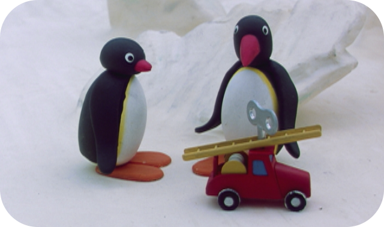
Episode 16
Pingu And The Toy
Pingo has a brand new toy car and PINGU wants one like it. But when Grandfather gives him one, the car soon breaks as Pingo’s one does. PINGU returns home disappointed. However his mother has also bought the car for PINGU but when she offers it to him he says he would prefer to play with his old wooden blocks.
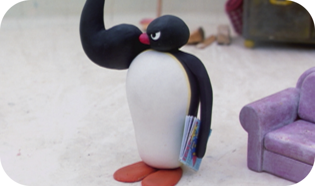
Episode 17
Pingu Plays Superman
PINGU plays Superman with his friend Pingo. Pinga on the other hand prefers to play princesses and doesn’t find PINGU and his games amusing. But PINGU wants to show off more and leaps around until he twists his foot. PINGU has to go to the doctor where he finds his friend already injured. While they wait Pinga proudly plays at being a princess.
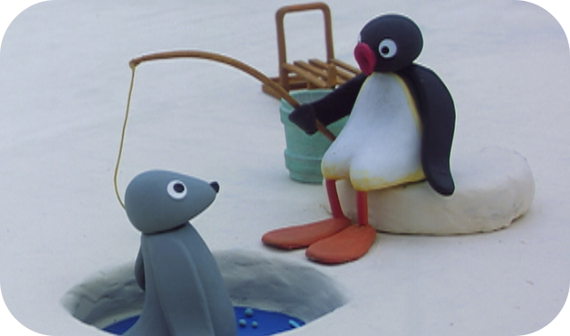
Episode 18
Pingu Has A Fishing Competition
PINGU and his two friends want to have a fishing competition. One of the two friends is not very skilled. Since Pingu and his friend have had more success they are about to leave. However just as they are doing so their friend has a stroke of luck and with the other drags a huge fish out of the water. They have to help him and are delighted at the fantastic catch. After they have helped the poor novice, he departs without a word of thanks leaving the other two standing.
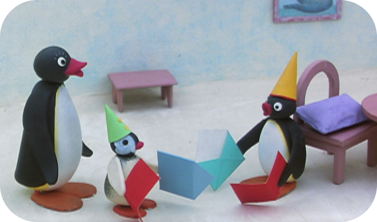
Episode 19
Pingu Hides A Letter
PINGU sees on the table, a letter which he would like to read. He hides the letter when he hears his mother coming. Pinga and mother search everywhere for the letter and PINGU is afraid to reveal that he has already opened it, but when he does it turns out that the letter was an invitation to go to a party. Pinga has an invitation too. They are already late because of the search and have to rush to get to the party on time.
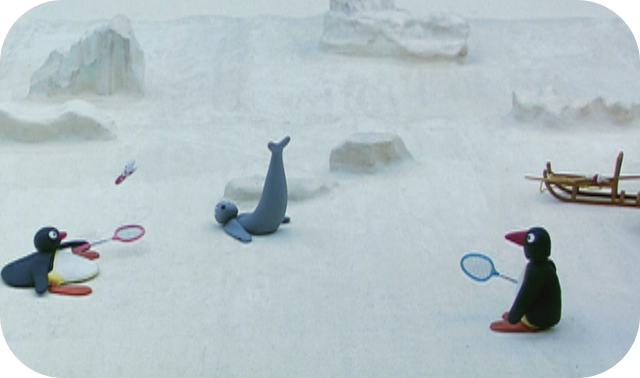
Episode 20
Pingu Is Not Allowed To Join In The Games
Robby and a friend want to play Badminton without PINGU, which makes him very unhappy. When their shuttlecock lands on an ice floe, PINGU fetches it, and in return wants the whole basket of fish they have. So his two friends decide to play a trick on PINGU and put a crab in the basket before they give it to him. When the crab emerges PINGU is so startled that he falls and hurts himself, seeing this the two friends feel sorry for him and share the game and the fish.
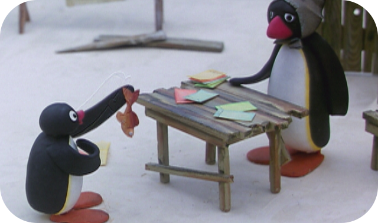
Episode 21
Pingu Draws A Winner
On the way to school PINGU watches a man as he draws lots and wants to try his luck too. Since he has no money he tries to pay with fish and, all though very poor the ticket seller gives him an extra free ticket in return. Taking it to his mother she realises that he has won a huge crate of fish. But rather than keep is all to himself PINGU decides to give most of the crate to the ticket seller as a thank you. When she gets the fish the ticket seller give PINGU a special talisman, which PINGU thinks is a far better prize.
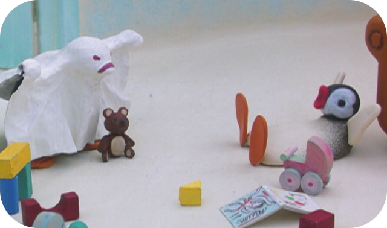
Episode 22
Pingu And The Ghost
PINGU gives Pinga a shock when he draws on a sheet to be ghost. Mother is not amused by the prank and sends PINGU to bed without any supper. All alone in his room with a terrible storm outside PINGU is terrified especially when he sees a cloth move in the wind and believes that he has seen a ghost. When Father comes in and sees that PINGU is so frightened he allows him to join Pinga in their parents’ bed.
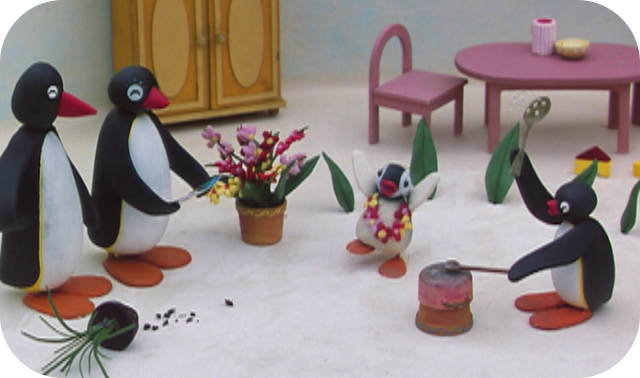
Episode 23
Pingu And The Postcard
A postcard form the South Seas leads PINGU and Pinga to adorn themselves with flowers and decorate the house. However, when mother discovers that they have destroyed her loveliest flower she passes out. Pinga explains to their father what they have done but a new bunch of flowers pulls mother from her sleep and she is glad to see the children playing so sweetly.
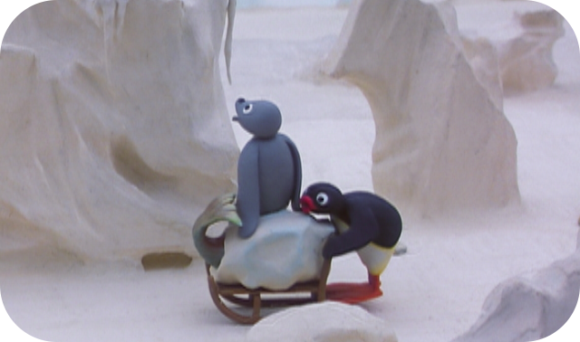
Episode 24
Pingu And The Discovery
PINGU and Robby are sledging and in the process they come across what they presume to be a fish and look forward to eating it. However upon closer examination, the catch turns out to be an old inedible figurehead. Their Grandfather understands what it is straight away and fetches the museum director who is delighted to find the exhibit he had lost. He leaves the figurehead with PINGU and Robby and they all have a fitting celebration.
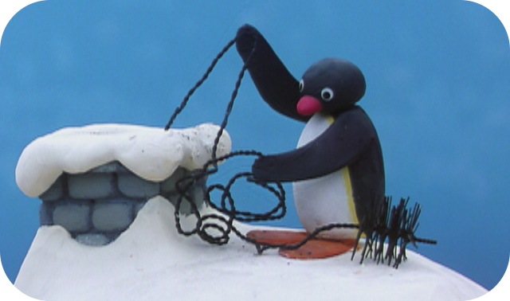
Episode 25
Pingu Steals
Mother sends PINGU to the baker’s to fetch the bread bu in the process he steals a cake. He attempts to conceal is from his mother but she spots it and he has to go back to the baker’s shop and apologise. As a punishment PINGU must clean the chimney, which he promptly falls down but gets a cake as a thank you anyway. However PINGU is not best pleased when he discovers that, whilst he has been washing off the chimney dirt, Pinga has eaten his reward.
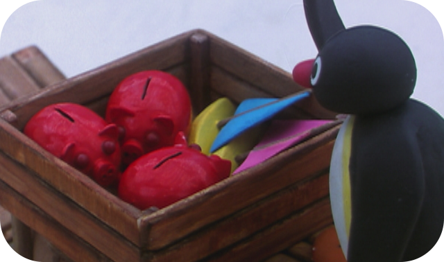
Episode 26
Pingu And The Lost Bal
PINGU is playing alone with wooden blocks when Pinga comes along and his tower collapses. In revenge he puts her ball just out of reach. Later he can’t find the ball and assumes a thief has taken it. Outside he spies a stranger and thinks that he can see he has the ball. He challenges him but he is mistaken the stranger does not have the ball. When he gets home he finds the ball in Pinga’s bed where she had hidden it.